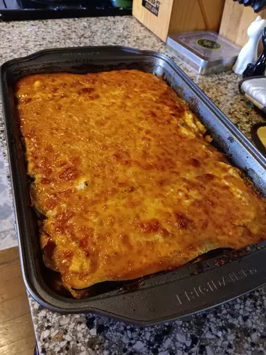

Lasagna

Description
Lasagna is a classic Italian dish consisting of layers of wide, flat pasta sheets alternated
with rich, savory fillings such as Bolognese sauce, creamy bechamel, and a genrous sprinkling
of cheese.
Baked to perfection, it creates a comforting and hearty meal that delights taste buds
with its harmonious blend of flavors and texture.
Ingredients
Pasta and Layers
- Lasagna noodles
- Bolognese sauce or marinara sauce
- Bechamel sauce
- Shredded mozzarella cheese
- Grated Parmesan cheese
Filling Options
- Ground beef or Italian sauce
- Ricotta cheese
- Spinach or other leafy greens
- Sauteed mushrooms
- Sliced zucchini or eggplant
Optional Seasonings and Enhancments
- Salt and black pepper to taste
- Dried oregano, basil, or Italian seasoning
- Red pepper flakes for added heat
- Chopped fresh parsley for garnish
Steps
- Prepare the Sauce and Filling
- Pre-cook the Lasagna Noodles
- Prepare the Bechamel Sauce
- Assemble the Lasagna
- Repeat Layers
- Bake the Lasagna
- Let it Rest and Serve